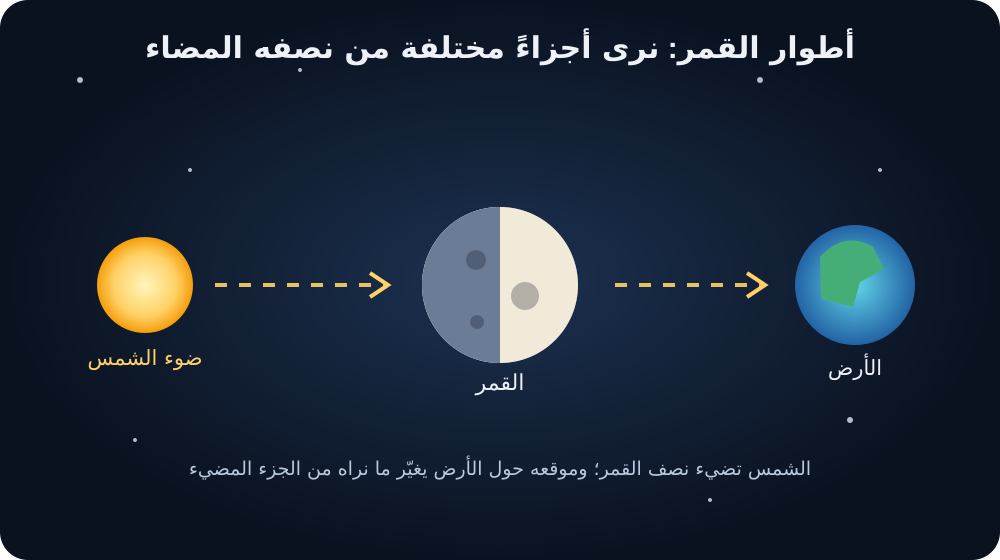

الفلك ببساطة
لماذا يتغير شكل القمر خلال الشهر؟
القمر لا يصنع ضوءه؛ بل يعكس ضوء الشمس. تضيء الشمس نصفه دائمًا تقريبًا، وأثناء دورانه حول الأرض نرى من النصف المضيء أجزاءً مختلفة. لذلك يظهر هلالًا أو تربيعًا أو بدرًا. هذه الأطوار ليست ظلّ الأرض؛ ظل الأرض على القمر يحدث في خسوف القمر فقط.
تستغرق الدورة بين طورين متماثلين نحو 29.5 يومًا. راقب القمر عدة ليالٍ متتالية وسترى الجزء المضيء يتغير تدريجيًا.
اقرأ شرح أطوار القمر من ناسا ↗